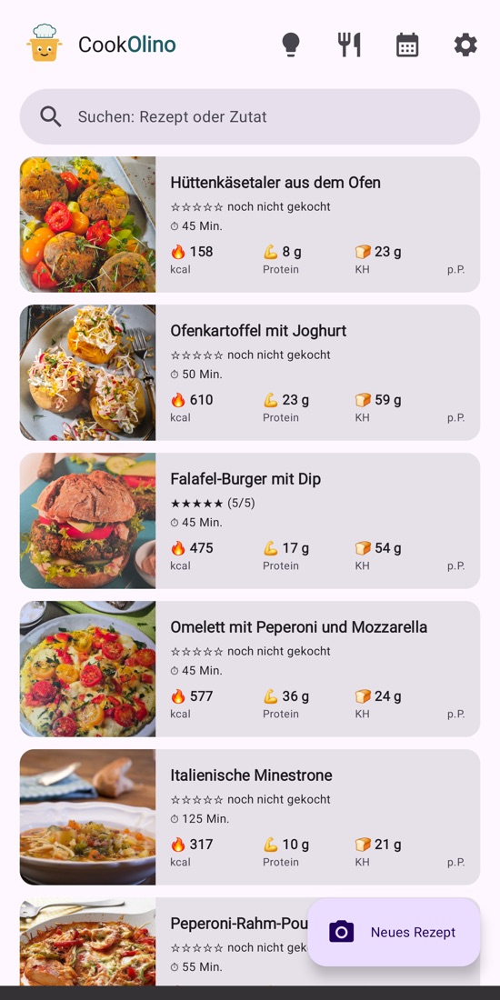
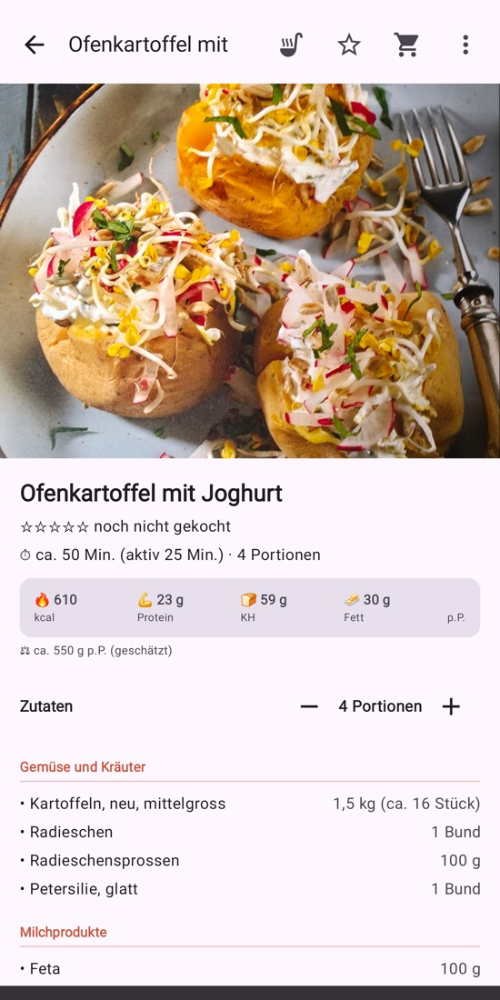
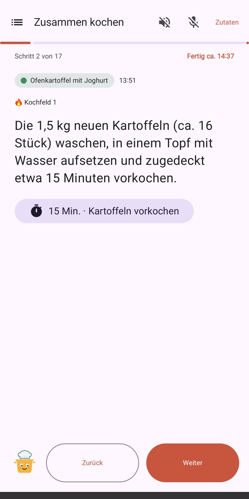

Foto genügt
Kochbuchseite fotografieren – Titel, Zutaten und Zubereitung werden erkannt und übersichtlich geordnet.
Jetzt im Test auf Android
Fotografiere eine Kochbuchseite oder teile einen Link – Olino macht daraus ein sauberes Rezept mit Zutaten, Schritten und Nährwerten. Dann planen, einkaufen und kochen – auch ein ganzes Menü auf einmal.

Alles an einem Ort
Kochbuchseite fotografieren – Titel, Zutaten und Zubereitung werden erkannt und übersichtlich geordnet.
Link einfügen oder im Browser teilen. Die Originalseite bleibt mit einem Tipp auf «Quelle» erreichbar.
Kalorien, Protein, Kohlenhydrate und Fett pro Person – geschätzt für jedes Rezept.
Gerichte für die Woche auswählen und mit «Was koche ich heute?» Ideen aus dem Kühlschrank holen.
Zutaten direkt in deine Bring!-Liste – gleiche Zutaten werden zusammengezählt.
Sag, was du nicht isst. Olino weist darauf hin, schlägt Ersatz vor und macht auf Wunsch eine eigene Variante.

Übersichtlich
Zutaten nach Gruppen geordnet, Portionen per Knopfdruck umgerechnet, Backtemperatur passend für Umluft oder Ober-/Unterhitze. Lass ein Rezept anpassen – zum Beispiel «vegetarisch» oder «für 2 Personen» – und mach es bei Bedarf rückgängig.

Hände voll? Kein Problem
Schritt für Schritt in grosser Schrift. Auf Wunsch liest Olino jeden Schritt vor und hört auf «weiter», «zurück» oder «Schritt 3». Timer startest du direkt aus dem Text.
Rezepte liegen auf deinem Handy. Das Backup landet in einem sichtbaren Ordner «Cookolino» in deinem eigenen Google Drive – oder in einem Ordner deiner Wahl. Es gibt keinen Server des Entwicklers, kein Konto, keine Werbung und kein Tracking.
Zur DatenschutzerklärungGut zu wissen
Während der Testphase ist CookOlino kostenlos.
Im Moment gibt es CookOlino nur für Android.
Für das Einlesen und Anpassen nutzt CookOlino die KI Claude von Anthropic. Dabei wird nur das Foto oder der Rezepttext übermittelt, keine Namen oder Kontodaten.
Mit dem Backup in Google Drive installierst du CookOlino auf dem neuen Handy, meldest dich an – und deine Rezepte samt Einstellungen sind wieder da.
Ja. Du sendest ein Rezept als Datei an andere CookOlino-Nutzer oder als lesbaren Text an alle anderen – zum Beispiel per WhatsApp oder Mail.
In den Einstellungen der App entfernt «Alle Daten löschen» Rezepte, Backup und Google-Freigabe mit einem Knopf. Mehr dazu
CookOlino ist im Test auf Android. Schreib eine kurze Mail mit der Google-Adresse deines Handys – du bekommst den Link zum Test.
Mail schreiben